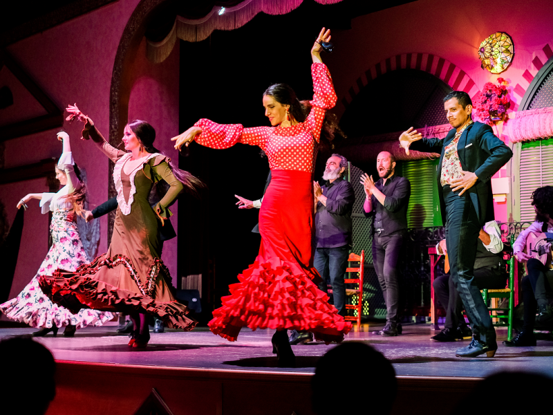

Gastronomía Sevillana

En Sevilla, la gastronomía y el flamenco comparten el mismo escenario: las tabernas y bodegas donde se tapea son también los lugares donde nació el flamenco. Una caña fría, unas espinacas con garbanzos y el sonido de una guitarra son la esencia de Sevilla.
A continuación las tapas más representativas con su descripción y precio aproximado:
| Tapa | Descripción | Ingrediente principal | Precio aprox. | Origen |
|---|---|---|---|---|
| Espinacas con garbanzos | Espinacas con garbanzos cocidos, comino y pimentón | Espinacas | 1,50 € | Árabe |
| Montadito de pringa | Pan tostado con morcilla, chorizo y carne mechada | Pringa de cocido | 1,20 € | Sevillano |
| Pavías de bacalao | Bacalao rebozado en masa de cerveza y frito | Bacalao | 1,80 € | Andaluz |
| Caracoles al ajillo | Caracoles en caldo con hierbabuena, laurel y especias | Caracoles | 2,00 € | Sevillano |
| Salmorejo | Crema fría de tomate con huevo duro y jamón ibérico | Tomate | 2,50 € | Cordobés |
| Pescaíto frito | Boquerones y cazón rebozados en harina y fritos | Pescado | 3,00 € | Andaluz |
En Sevilla, pedir una caña y una tapa es toda una institución. Muchos bares tradicionales regalan la tapa con la bebida. La costumbre es ir de bar en bar tomando una consumición en cada uno. Este ritual se llama "ir de tapas" y es la mejor manera de conocer la auténtica gastronomía sevillana.